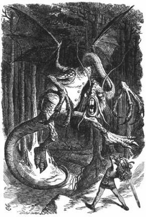

La Dgiabl'yéouoqu'thie(1)
auve commentaithes
Jabberwocky en Jèrriais

'Tait mébouoilli(2). Les tôves(3) lîtheurs(4)
Githaient et gîmbliaient(5) sus lé liainde(6).
Les ouothogôves(7) 'taient touos mîntheurs(8),
Ouaithe qu'les râthes(9) mâmes(10) hortcheindrent(11).
"Garde-té du Dgiabl'yéouoque(1), man fis!
Chutte dgeule d'mordeuses! Ches mains grînmeuses!
Garde-té d'l'ouaîsé Tchappe-Tchappe(12), et fis
La Bandésnâque feunm'theuse!(13)"
I' prînt san sâbre vèrtcheux(14) en main,
S'en allit souotre l'enn'mîn mantchibl'ye(15),
Au bouais Tînme-Tînme, restit enfîn
Auve ses pensées hâthibl'yes(16).
Coumme i' hâthait(17) auprès du bouais,
Lé Dgiabl'yéouoque, la fliambe ès ièrs,
Pathut chûffliant(18) dans la forêt
Et beurbliait(19) ès taûgièrs(20).
Ieune, deux! Ieune, deux! Et l'sâbre vèrtcheux
Lî baîllit bein eune pataöuarre!(21)
La bête dêfaite, i' prînt sa tête,
Galoppeux(22) et gaillard.
"As-tu tué lé Dgiabl'yéouoque?
Veins m'embraîchi, man fis radgi!(23)
O jour fraptchi!(24) Haro! Hari!(25)"
Lé vièr rîth'lait(26) dé ji.
'Tait mébouoilli(2). Les tôves(3) lîtheurs(4)
Githaient et gîmbliaient(5) sus lé liainde(6).
Les ouothogôves(7) 'taient touos mîntheurs(8),
Ouaithe qu'les râthes(9) mâmes(10) hortcheindrent(11).
|
Commentaithes:
- "Jabberwocky" est lé titre d'chu poème en Angliais (ou bein eune sorte d'Angliais) par Lewis Carroll. Tch'est qu'ch'est "Jabberwocky"? Lé monstre a nom "Jabberwock" et i' pathaît êt' tchique sorte dé dgiabl'ye. En Jèrriais, don, nou dithait qu'lé monstre s'sait lé Dgiabl'yéouoque. Si "Jabberwocky" est chein tch'lé Dgiabl'yéouoque fait, lé titre du poème en Jèrriais dev'thait êt' "la Dgiabl'yéouoqu'thie" - l'action du Dgiabl'yéouoque.
- S'lon Carroll, ou pustôt s'lon Un-p'tit D'un-p'tit dans "Alice à travèrs l'mitheux", lé mot "brillig" veurt dithe quat' heuthes d'l'arlévée quand nou c'menchons à grilli l'dînner. Lé mot pathaît êt' un portemanteau dé "boiling" et "grilling" auve tchique suggestion dé "brilliant". En Jèrriais, nou-s'a "méjeu" et "mînniet" et don "mébouoilli" veurt dithe l'heuthe au mitan d'la bouoillie. Auve chu mot, lé poème c'menche auve l'êvocâtion d'eune caûde arlévée.
- S'lon Un-p'tit D'un-p'tit, des "toves" sont d's annimaux tchi r'sembl'yent un mio ès bliaithieaux, un mio ès lêzardes, et un mio ès tire-bouchons et tchi s'nichent souos les cadrans et tchi mangent lé fronmage. Nou dithait en Jèrriais "tôves".
- "Slithy" est acouo un mot-portemanteau formé dé "lithe" et "slimy". "Lîtheux" devthait sîngnifier tchique chose tchi lit, p't'êt' pa'ce qué chenna sembl'ye un mio lîncreux. Ch'est p't'êt' l'êffet d'la pé d'lêzarde ou du méta du tire-bouchon?
- "Githaient et gîmbliaient": "gyre" veurt dithe "touônner" mais l'vèrbe "gither" pouôrrait êt' compathé auve lé mot "gîthe" tchi veurt dithe "vielle femme". Chenna pouôrrait don sîngnifier "bouogi coumme eune vielle femme". Un gîmblet est un "gimlet" en Angliais, et Un-p'tit D'un-p'tit expl'yique qué "gimble" veurt dithe "faithe des creux coumme un gîmblet". J'éthions don un vèrbe "gîmblier".
- L'expl'yicâtion dé "wabe" est qu'ch'est l'tèrrain "a long way before" un cadran, "a long way behind" et "a long way beyond it". "Liainde" est don l'tèrrain "liain d'vant un cadran, liain d'riéthe un cadran et liain du cadran". Et chenna èrsembliait ès landes, sans doute.
- "Borogoves" sont d's ouaîsieaux - mais tristes et malpiégnis. En Jèrriais "ouothogôves" s'saient eune manifestâtion du ouotho.
- "Mimsy" est un mot-portemanteau formé dé "flimsy and miserable" s'lon Un-p'tit D'un-p'tit. "Mîntheux" s'sait l'sentiment quand nou s'èrgarde mînséthabl'yement dans l'mitheux.
- "Rath" est un vèrt couochon (respé). Nou dithait en Jèrriais "râthe".
- "Mome" veint dé "from home" s'lon Un-p'tit D'un-p'tit, et i' sembl'ye qué "mâme" est prîns dé "ma maîson".
- "To outgribe" s'lon l'expl'yicâtion donnée par Un-p'tit D'un-p'tit veurt dithe "braithe, pousser un cri". Mais "hortcheindre" pouôrrait sîngnifier tchique chose coumme l'Angliais "hold out". Les râthes s'saient don pus heûtheurs qu'les pouôrres ouothogôves. Chu contraste est îndiqué dans ches lîngnes. Nou pouôrrait étout suggéther qué "hortcheindre" est lié auve lé fait qu'les râthes sont hors la maîson, coumme nou sait du mot "mâme"
- "Tchappe-Tchappe" s'sait d'l'onomatapée, sans doute. Mais y-a-t'i eune suggestion dé "happer"? Ou eune connection auve lé "tchapi" des langues Slaves, tchi veurt dithe "cigogne"?
- "Frumious": acouo un mot-portemanteau. Carroll dît qu'ch'est quand nou n'peut pon dêcider si nou-s'est "fuming" ou "furious". En Jèrriais, ché s'sait un portemanteau dé "feunmant" et "futhieux", mais "feunm'theux" a pustôt un lian auve la feunm'thée: mystéthieuse, sombre et suffotchante.
- Carroll n'a pon expl'yitchi lé mot "vorpal". Y-éthait-i' un lian auve lé mot Jèrriais "vèrpeu" (en Angliais "glow-worm")? Tchique chose tchi lit mystéthieusement, p't'êt'? Mais lé mot qu'nou-s'a dans chu poème est "vèrtcheux". En Jèrriais, "vèrtchi" veurt dithe "curved, bent" en Angliais. Un sâbre vèrtcheux pouôrrait êt' un sâbre courbé, ou bein un sâbre tchi fait courber l's ennemîns, ou tchi fait des copes courbées.
- "Manxome" suggéthe tchique chose horribl'ye, mais y'a des gens tchi suggéthent qu'chu mot est lié auve "Manx" ch'est à dithe, un cat sans coue. I' faut dithe qu'lé Dgiabl'yéouoque a bein eune coue - même s'i' n'a pon d'tête à la fîn! En Jèrriais, lé mot "mantchi" veurt dithe en Angliais "to miss" et don "mantchibl'ye" suggéthe tchique chose qu'nou manque tout l'temps, tchique chose tchi n'est pon aîsi à trouver.
- "Uffish" fut expl'yitchi par Carroll coumme un êtat "gruffish... roughish... huffish..." Nou-s'éthait creu qu'les pensées éthaient 'té pus paîsibl'yes qu'chenna. I' n'est pon cliai coumment qu'eune pensée peut êt' "uffish". "Hâthibl'ye" en Jèrriais s'sait lié auve lé mot "hâthîn", tchique chose coumme l'Angliais "hazy" ou p't'êt' pustôt capabl'ye d'êt' "hazy". Sans doute, lé janne houmme chèrche tchique mouoyen d'tuer lé monstre, mais i' n'est pon seu.
- "Hâther" sembl'ye sîngnifier "penser d'eune maniéthe hâthibl'ye", don penser "uffishly" ou êt' dans un êtat d'"uffish thought". Un vèrbe lié auve lé mot "hâthîn", étout.
- "Whiffling" veurt dithe "soûffliant auve des courts pouffes", mais lé mot suggéthe étout "whistling". Lé vèrbe "chûfflier" suggéthe les mots Jèrriais "soûfflier", "sûfflier", et p't'êt' étout l'mot Angliais "shuffle" - l'êtchivalent du Jèrriais "chârer". Lé Dgiabl'yéouoque va par la forêt don en chârant et en sûffliant. Parmi lé ruisselement des fielles, nou-s'entend étout coumment lé monstre soûffl'ye. Tchille înmage!
- "Burble" pouôrrait êt' considéthé coumme un portemanteau dé "bleat", "murmur" et "warble" s'lon eune suggestion d'Carroll, mais eune aut' théorie dit qu'lé mot est un portemanteau dé "burst" et "bubble". Y'a étout, s'lon lé Dictionnaithe Angliais d'Oxford, eune sîngnificâtion dé "burbled" coumme "mêlé, morfondu". "Beurblier" sembl'ye êt' prîns d'l'Angliais, mais ch'est p't'êt' eune variâtion du mot Jèrriais "bueûler" ou "beûler" tchi s'sait bein "bleat" en Angliais. Nou peut suggéther eune aut' expl'yicâtion: "beurblier" est lié auve lé beurre et dêcrit lé brit d'la batt'tie d'beurre. Coumme lé Dgiabl'yéouoque pâsse les taûgièrs, i' les tape d'san corps, et chu brit fait penser à la batt'tie d'beurre dans la selle. Est-che possibl'ye?
- Carroll n'donnît autcheune expl'yicâtion du mot "tulgey". Mais si un "tulgey wood" est eune forêt remplyie d'pliantes ou d'bouais app'lés "tulge", nou vait qué "tulge" en Jèrriais dev'thait êt' un "taûgi". La forêt est remplyie d'ches bouais - des "taûgièrs". Nou pouôrrait penser qu'eune "taûge" est un frit, et qu'lé "taûgi" est l'bouais sus tchi craîssent les "taûges". J'éthions don: "taûge" - "taûgi" - "taûgièrs" d'la même manniéthe qu'j'avons "pomme" - "pommyi" - "pommièrs" ou "tchoeur" - "tchoeuryi" - "tchoeurièrs". Ches "taûges" dev'thaient êt' des frits seûrs et duèrs, sans doute.
- "Snicker-snack" est d'l'onomatopée en Angliais. Lé mot "pataöuarre" en Jèrriais nous donne eune întéthessante histouaithe: s'lon l'Dictionnaithe, y'avait un pugiliste tch'est v'nu d'l'Angliétèrre en Jèrri au c'menchement du dgiex-neuvième siècl'ye. San nom 'tait Warr ou Whare. À la siette d'sa vîsite, nou s'rapp'lait dé "la patte à Warr" - un fanmeux co d'poing! Ichîn dans l'poème, ch'est l'sâbre tchi donne lé co au monstre, et l'mot "pataöuarre" suggéthe l'envithonnement Victorien dans tchi Carroll êcrivait. Nou pouôrrait dithe qué "pataöuarre" est aussi Victorien qué l'mot "snicker-snack".
- "Galumphing", ch'est galoper en triomphant. Lé mot "galoppeux" dêcrit l'êmotion dé tchiqu'un tchi galoppe. Ichîn lé janne héros est dêjà "galoppeux" quand i' prend la tête du monstre, et n'l'est pon seul'ment quand i' rentre siez sé, coumme dans l'Angliais. Il est tchuthieux qué Carroll né dêcrit pon l'êmotion du janne houmme au moment d'sa victouaithe. Ichîn, nou sait qu'il est "galoppeux" - sans doute, pa'ce qu'i' veurt ramasser la tête dé l'enn'mîn lé pus vîte possibl'ye.
- "Beamish" en Angliais veurt dithe "lithant". "Radgi" s'sait lié auve lé mot "radgîn" - un grand caûd feu. Nou pouôrrait l'comprendre don coumme "caûd, lithant, actif".
- "Frabjous" suggéthe un mio "fabuleux". "Fraptchi" suggéthe la frapp'thie. P't'êt' un jour sus tchi nou-s'est frappé d'bonheu? Ou bein un jour quand nou-s'est tellement heutheux qu'lé jour pâsse hardi vîte et qu'nou dit qué l'jour a rap'tichi? Un jour "fraptchi" s'sait don un jour court et frappant, sembl'ye-t'i'.
- "Callooh! Callay!" veurt dithe "bein" ou "bé" en Grèc (dans deux difféthentes prononciâtions). Lé péthe au janne houmme, coumme tout bouan Jèrriais, s'êcaque auve lé nom "Haro" et pis un forme qu'nou n'connaît pon: "Hari". Chenna suggéthe probabl'yement étout l'Angliais "hooray".
- "Chortle" est acouo un mot-portemanteau, formé des mots "chuckle" et "snort". La rîthelée est la moqu'thie, et lé vèrbe "rîth'ler" pouôrrait sîngnifier rithe auve un mio d'moqu'thie. Lé mot Angliais "snort" sembl'ye suggéther un mio d'moqu'thie, mais i' n'est pon cliai du tout pourtchi qu'lé péthe rit auve chutte moq'thie. I s'moque p't'êt' du Dgiabl'yéouoque. I' faut r'mèrtchi qué chu vèrset contcheint un tas d'sons en "i" tchi suggéthent l'êffet du rithe: "i... i... i... i... i..."
Jabberwocky(1)
'Twas brillig(2), and the slithy(4) toves(3)
Did gyre and gimble(5) in the wabe;(6)
All mimsy(8) were the borogoves,(7)
And the mome(10) raths(9) outgrabe.(11)
"Beware the Jabberwock(1), my son!
The jaws that bite, the claws that catch!
Beware the Jubjub(12) bird, and shun
The frumious(13) Bandersnatch!"
He took his vorpal(14) sword in hand:
Long time the manxome(15) foe he sought--
So rested he by the Tumtum tree,
And stood awhile in thought.
And, as in uffish(16) thought he stood,
The Jabberwock, with eyes of flame,
Came whiffling(18) through the tulgey(20) wood,
And burbled(19) as it came!
One two! One two! And through and through
The vorpal blade went snicker-snack!(21)
He left it dead, and with its head
He went galumphing(22) back.
"And hast thou slain the Jabberwock?
Come to my arms, my beamish(23) boy!
O frabjous(24) day! Callooh! Callay!(25)"
He chortled(26) in his joy.
'Twas brillig(2), and the slithy(4) toves(3)
Did gyre and gimble(5) in the wabe;(6)
All mimsy(8) were the borogoves,(7)
And the mome(10) raths(9) outgrabe.(11)
Geraint Jennings Juilet 1998
Viyiz étout: